Linux Guide
Информация
Данный гайд обеспечит пользователя базовыми конепциями по работе с Linux-системой. Он написан подростком-самоучкой, так что в тексте может встречаться множество неточноестей, упрощений, ошибок и упущений важных деталей. Просьба учитывать это при чтении и иметь это все ввиду.
Стоит иметь ввиду, что эта страница по умолчанию будет одностраничной, но будет установлены различные вспомогательные элементы для ориентации, в будущем планиурется удобное меню навигации и подсветка ключевых слов. Часть информации может браться с открытых источников.
В первое время у текста может отстутствовать последовательность и стабильность. Статьи могут многократно меняться и переделываться. Если появятся проблемы - рекомендую использовать другой источник, что бы не быть дезинформированным. Напоминаю, что статья все еще пишется простым студентом, а не проффесиональным редактором википедии
Список задач
Гайд
Написание базовых концепций в гайде
26.12
Гайд
Добавить ссылки в навигационное меню
26.12
История изменений
| Сообщение | Hash | Дата |
|---|---|---|
| Статья обосновных командах и изменены заголовки | a9783f9c4373901cb7836f0334d057b50fb0170e |
Monday 27.12.2021 17:07:38 |
| Отформатирована дата | 7bef4aa6b5682a9d20f2c986e2662c4e7728a83b |
Monday 27.12.2021 16:55:46 |
| Добавлено Топ 10 дистрибутивов | 2cbb201daf0f95a439e791d377663f025fad1ad9 |
Monday 27.12.2021 16:35:38 |
| Новая статья Установка Manjaro | e20bbc10eba36191a131567fc5f73b865392896d |
Monday 27.12.2021 16:01:55 |
| Добавлена система картинок | ab7f55034c95ae183d2a497d302271cf03f9bee9 |
Monday 27.12.2021 15:17:10 |
| Добавлено сообщение | 64acf7da9ee728c5289fe534f1367e8979913717 |
Monday 27.12.2021 14:36:28 |
| Изменение навбара | 7786a018f040cad37ac4901b1427ed554ab65041 |
Monday 27.12.2021 14:36:15 |
| Система форматирования комбинаций клавиш | 5a41a5d0c0fe8b222f999cf57e187ba59a20d6b9 |
Monday 27.12.2021 14:27:52 |
| Добавлены тестовые статьи | 2de3f9f52f4659476902d9a3897d1dac192c6e59 |
Monday 27.12.2021 14:27:19 |
| Добавлены определения | 73dafc39c9295c1ced398746cc2905fc8a55c58e |
Monday 27.12.2021 13:47:12 |
| Убран автор из таблицы изменений | 26b84daf5a62a7e492042393f732f36f475cb793 |
Sunday 26.12.2021 22:28:55 |
| Добавлены блоки кода 2 | 195e6736a0b6ae10a3e6c1dbd3f5213be0020974 |
Sunday 26.12.2021 22:27:56 |
| Добавлены блоки кода | 5153c634b1d880fcaaca085a50de925cc0f44322 |
Sunday 26.12.2021 22:27:37 |
| Фикс названия сайта | 874ec8638a9cacfce46944e86746df4845bfb76a |
Sunday 26.12.2021 22:15:11 |
| Merge branch 'master' of https://github.com/NewLife1324/linux-guide | 446e416cc1fdbf607ab528b1009c853128828915 |
Sunday 26.12.2021 22:12:47 |
| Правка в генераторе | 08e69d100248f6cd1b84f423ce8d217bd6e5c542 |
Sunday 26.12.2021 22:10:18 |
| Создание README | e1082088b09466fa3272160c07bcb44b20a50c64 |
Sunday 26.12.2021 22:09:29 |
| Переработка страницы под нужды сайта | 90998f34400117ca8b2ee47dd262a193119487f9 |
Sunday 26.12.2021 22:07:48 |
| Иницилизация | f533791ec6d66a2b2f134c588685316417689f41 |
Sunday 26.12.2021 21:50:24 |
Прогресс
Информация: Завершено Прогресс Неизвестно
- Гайд:
Основное
Установка Manjaro 27.12
Для того, что бы как то ознакомиться с Линукс, нам надо его установить. Гайд будет основан на установке Manjaro
Manjaro 20 - новый релиз дистрибутива Manjaro Linux, основанного на ArchLinux и предназначенного для установки на рабочие станции и обычные домашние компьютеры.
Для того, чтобы установить Manjaro 20, достаточно выполнить следующие действия:
- Скачайте образ диска Manjaro 20 с официальной страницы дистрибутива: Скачать
- Запишите образ на флешку или любой другой удобный для вас носитель
- Записать образ дистрибутива Manjaro Linux на флешку можно с помощью нескольких специальных программ. Это Rufus, Win32 Disk Imager и Universal USB Installer. Рассматриваю весь процесс на примере первого приложения, так как оно самое простое, легкое (1 МБ), а еще имеет как установочную, так и переносную версию, Скачать можно тут.
- 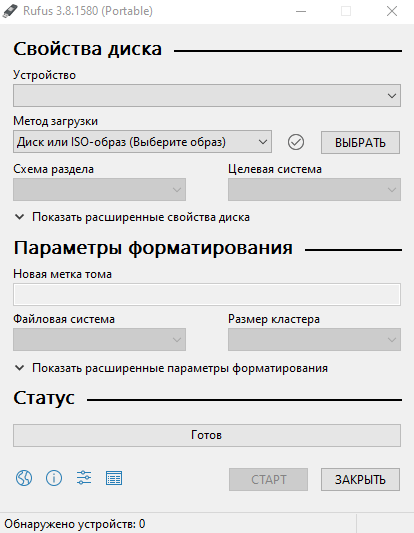 Интерфейс программы
- Запускаем ее и начинаем настройку. Я выбираю сначала переносное USB устройство, метод загрузки (ISO), затем кликаю по кнопке «ВЫБРАТЬ», чтобы указать путь к образу.
- Схему раздела и целевую систему оставляю без изменений, указываю метку тома, файловую систему и запускаю запись образа на флешку нажатием на кнопку «СТАРТ».
- Выставьте в BIOS первичную загрузку с DVD или Flash и загрузитесь с созданного носителя.
- Так как я записала образ на флешку, необходимо поменять настройки в BIOS или UEFI так, чтобы она стояла в приоритете при первичной загрузке. Перезагружаю компьютер и перехожу к графическому меню нажатием на одну из горячих клавиш (F8, F2, Del) или же комбинацию (Shift + F2). А вот какую – зависит от материнской платы. Если же перед этим у меня был установлен Windows 10, я могу перейти в режим безопасной загрузки через «Параметры».
- Как только меню BIOS/UEFI откроется, я перехожу во вкладку «Boot» и открываю настройку «Boot Device Priority». На первой позиции должен быть USB разъем.
- Гайд по установке можно посмотерть тут или ниже
Общее представление об linux 26.12
 Пингвин
Пингвин
Стоит сразу отметить, что вашим другом станет Терминал. Терминал — это программа, которая используется для взаимодействия с шеллом. Это просто интерфейс к нему и другим программам командной строки, которые работают внутри нее.
Команда в bash — это наименьшая единица кода, которую bash может выполнить. С помощью команд мы сообщаем шеллу, что нам нужно, чтобы он сделал. bash обычно принимает от пользователя одну команду и возвращается к нему после того, как команда будет выполнена. Чтобы немного освоиться в bash, давайте попробуем выполнить несколько простых команд.
Здесь будет раскрыто базовое представление о Linux . Стоит уточнить парочку следующих моментов:
- Установка программ и пакетов производится в большинстве случаев через терминал, с помощью пакетного менеджера. При этом стоит учитывать, что ОС на базе линукса очень много и в разных системах применяются разные менеджеры, которые отвечают за установку. Тут я постараюсь дать максимально общие представления
- Через терминал можно полностью настраивать систему, редактировать текстовые файлы, просматривать их, перемещать, удалять, переименовывать и копировать. При достаточных знаних использование терминала может быть эффективней, чем проводника
- Ctrl+Alt+T для открытия терминала. В нем можно проводить большинство операций
Топ дистрибутивов 2021 27.12
ИсточникВыбор дистрибутива Linux для использования на своём компьютере или ноутбуке довольно не простая задача. Особенно для новичков. Одним из критериев выбора может стать популярность дистрибутива. Поскольку, чем больше людей его используют, тем, скорее всего, он лучше и тем больше информации по нему будет в интернете. Но, поскольку, Linux дистрибутивы не собирают телеметрии, определить популярные дистрибутивы довольно сложно.
С года в год мы делаем рейтинг дистрибутивов по их популярности в поисковой системе Яндекс. Пришло время поговорить про лучшие дистрибутивы Linux 2021 года. Конечно, этот способ оценки не даёт сто процентной точности, однако позволяет понять общую картину.
1. UBUNTU
Неизменным лидером за последние несколько лет остается дистрибутив Ubuntu, разработанный компанией Canonical. Этот дистрибутив основан на Debian и существует с 2004 года. У Ubuntu есть версия для настольных компьютеров, а также для серверов. Компания Canonical и сообщество выпускают редакции дистрибутива почти со всеми популярными окружениями рабочего стола. За время развития дистрибутива в сети накопилось множество обучающих материалов, инструкций и решений для возможных проблем. Это лучший дистрибутив для домашнего использования и рабочих станций.
Дистрибутив достаточно стабилен, потому что имеет фиксированный график релизов. Версия с длительным сроком поддержки выходит раз в два года в апреле, а обычные версии со сроком поддержки в 9 месяцев выходят раз в пол года. Если вы предпочитаете стабильность, то можете использовать только LTS версии. Если же вам нужно более новое программное обеспечение - можно обновляться до каждой обычной версии. С появлением универсального менеджера пакетов snap проблема с устареванием была частично решена. Теперь можно и в стабильной системе получить новые версии браузеров, мессенджеров и других программ. Дальше давайте рассмотрим другие популярные Linux дистрибутивы 2021.
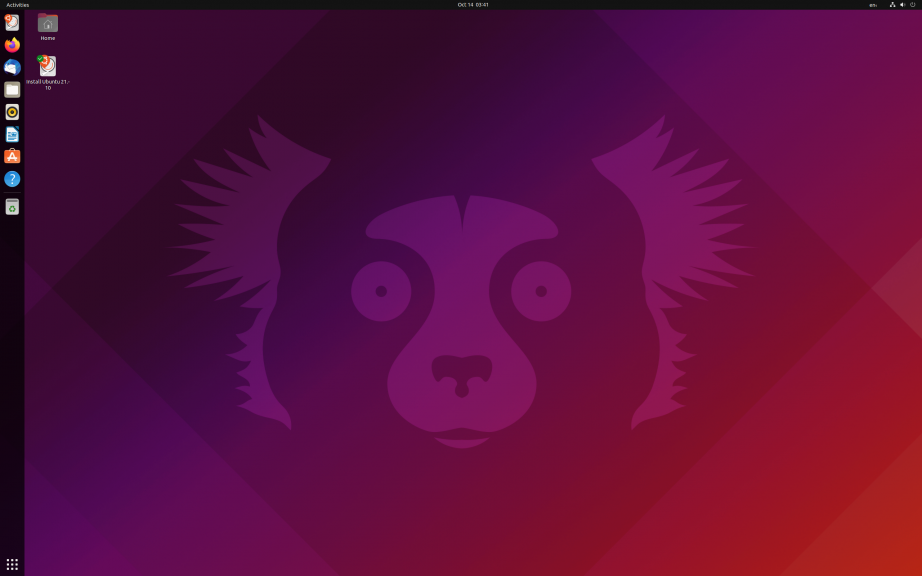 Интерфейс Linux Ubuntu2. DEBIAN
Второе место, как и раньше занимает дистрибутив Debian. В отличие от Ubuntu этот дистрибутив развивается только сообществом и существует с 1995 года. Именно на нём основывается Ubuntu. Debian ещё более стабилен чем Ubuntu, потому что новые версии выходят примерно раз в два года, а поддержка старых версий длиться на протяжении примерно пяти лет. Этот дистрибутив больше подходит для серверов. Там, чаще всего, нужна стабильность, а не новизна программного обеспечения, однако на домашних компьютерах его тоже можно использовать.
Поскольку система Ubuntu основана на Debian, то всё программы работающие в ней, скорее всего, будут работать и в Debian. Но получить их будет немного сложнее. Мне Debian показался более сложным в настройке по сравнению с Ubuntu. И конечно, более старое, но стабильное программное обеспечение не преимущество при использовании на рабочей станции. Лучший дистрибутив, но для сервера.
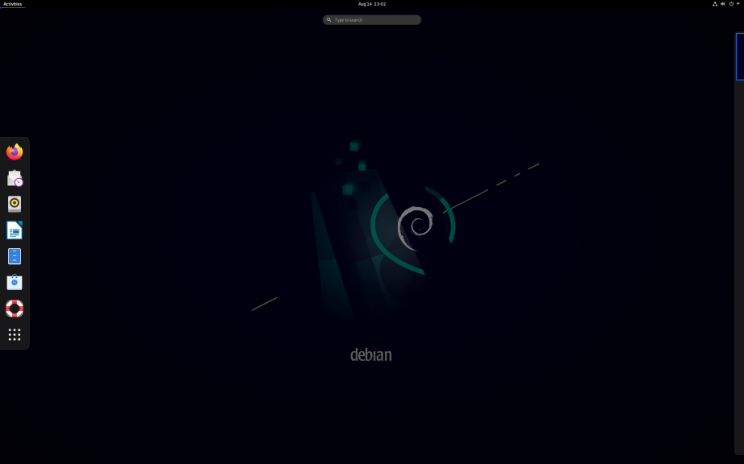 Интерфейс Linux Debian3. CENTOS
Дистрибутив CentOS всё ещё остаётся на третьем месте по популярности. Если Debian время от времени используется в качестве рабочей системы, то CentOS, как и Red Hat, на исходном коде которого он, до недавнего времени, был основан, предназначены для серверов. Сейчас на CentOS много чего работает. Но в 2021 году в компании Red Hat решили превратить CentOS в полигон для новых возможностей, которые потом появятся в коммерческом дистрибутиве Red Hat.
Поддержка CentOS 8 прекратится 31 декабря 2021 года, CentOS 7 - в 2024 году. После этого будет существовать только CentOS Stream, которая использует систему rolling релизов. Таким образом, изменения сначала попадают в CentOS Stream, тестируются, и только затем на основе этого дистрибутива строится Red Hat Enterprice Linux. Тогда как раньше всё было наоборот. В таких условиях нельзя рекомендовать использовать CentOS для новых серверов, однако на всё ещё остаётся популярной.
Довольно быстро были созданы две альтернативы. Это Rocky Linux и Alma Linux. Первый дистрибутив развивается сообществом, второй - компанией CloudLinux. На данный момент Rocky Linux согласно Яндексу более популярен, однако оба дистрибутива ещё мало используются.
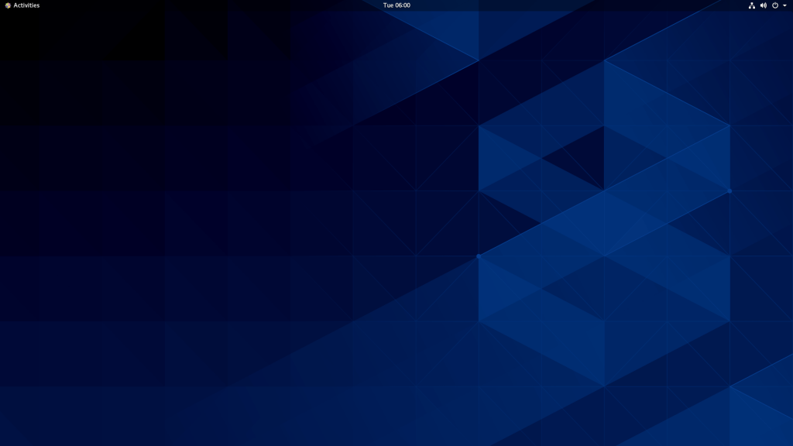 Интерфейс Linux Centos4. ASTRA LINUX
Российский дистрибутив Astra Linux сместил Linux Mint и теперь занимает это место. Случилось это, скорее всего, благодаря законодательной инициативе в РФ по использованию российского ПО в государственных учреждениях и школах. Из-за этого её начали устанавливать во многих организациях, и теперь много людей ищет как ею пользоваться. У дистрибутива есть две версии Astra Linux Common Edition, которую можно свободно скачать и использовать всем, а также Astra Linux Special Edition, которая предназначена для военных целей.
Основная особенность системы Special Edition в том, что все репозитории к ней идут на дисках, а сетевые репозитории по умолчанию не добавлены. Но этого требует специфика её использования. Общая же система многим напоминает Debian, потому что она была на нём основана. В системе используется собственное окружение рабочего стола под названием Fly, основанное на KDE. Его интерфейс довольно похож на Windows и многим начинающим может этим понравится. Большинство действий по работе с системой можно выполнить в графическом интерфейсе. Новые релизы выходят не регулярно, но относительно часто, примерно раз в год.
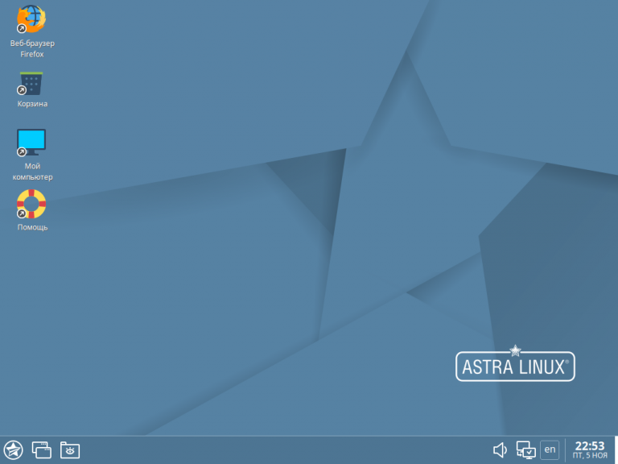 Интерфейс Linux Astra5. LINUX MINT
Дистрибутив Linux Mint существует с 2006 года и основывается на LTS выпусках Ubuntu. Раньше он занимал четвертое место в этом рейтинге. Дистрибутив имеет фиксированный график релизов. Каждый следующий релиз выходит спустя какое-то время после выпуска LTS версии Ubuntu. Он больше ориентирован на новичков в мире Linux и делает настройку системы проще.
После выпуска Gnome 3 с новым дизайном интерфейса в Linux Mint начали разрабатывать собственное окружение рабочего стола, сохраняя при этом традиционный внешний вид рабочего стола, напоминающий чем-то Windows. Кроме Cinnamon официально поддерживаются окружения MATE и XFCE. Кроме того, вместе с системой поставляется несколько утилит для её настройки. Например, для обновления, массового переименования файлов, управления пакетами, записи образов на флешку и так далее.
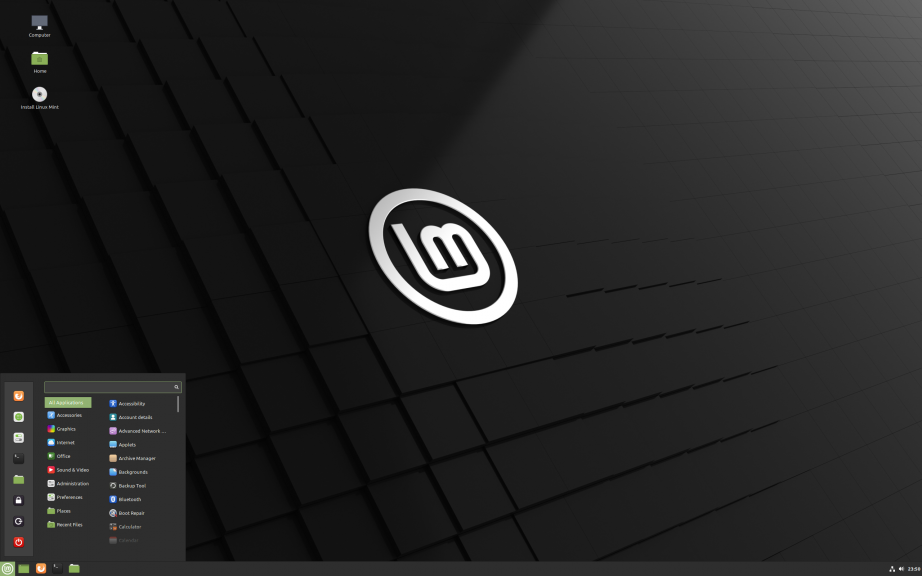 Интерфейс Linux Mint6. KALI LINUX
Kali Linux - самый популярный дистрибутив для тестирования безопасности. Он основан на Debian и в качестве окружения рабочего стола по умолчанию использует Xfce. Новые релизы выходят не регулярно, но несколько раз в год. После выхода каждого следующего релиза предыдущий перестаёт поддерживаться. Основная особенность и преимущество этого дистрибутива то, что в нём предустановлено огромное количество инструментов для тестирования безопасности. Если эти инструменты вам не нужны, это всё тот же Debian и использовать его на домашнем компьютере нет смысла. Однако если нужны - вы можете сэкономить много времени на их установке и настройке выбрав Kali Linux.
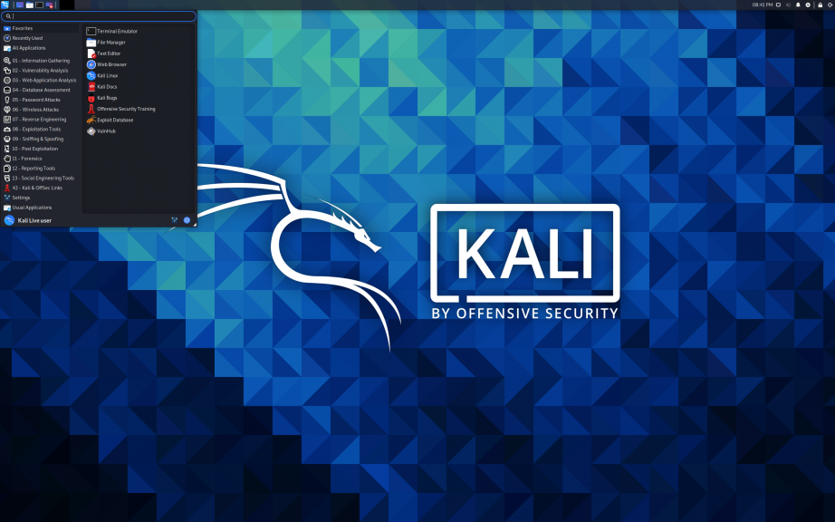 Интерфейс Linux Kali7. FEDORA
Из-за появления в топе Astra Linux дистрибутив Fedora сместился с шестого на седьмое место. Этот дистрибутив разрабатывается компанией Red Hat в первую очередь как система для рабочих станций. Все новые возможности, которые в будущем войдут в Red Hat Enterprice Linux сначала появляются в Fedora. Например, пакетный менеджер dnf сначала появился в Fedora, а только потом в RHEL и CentOS.
В последние годы свежие версии Fedora выходят раз в пол года, весной и осенью. Поддержка каждой версии Fedora длится примерно 13 месяцев. Для каждой версии поддержка заканчивается с выходом версии: номер_версии+2. Никаких LTS версий, которые можно было бы использовать в течении нескольких лет тут нет. В качестве системы управления пакетами используется RPM, как и во всех дистрибутивах Red Hat. Также в качестве альтернативы Snap в Fedora есть универсальный пакетный менеджер Flatpak. В качестве окружения рабочего стола используется Gnome. Кроме того, Fedora постоянно пытается внедрять новые технологии полезные для разработчиков, например, существуют редакции дистрибутива Fedora CoreOS, которую можно использовать в контейнерах и Fedora Silverblue, особенная тем, что состоит из неизменяемых компонентов.
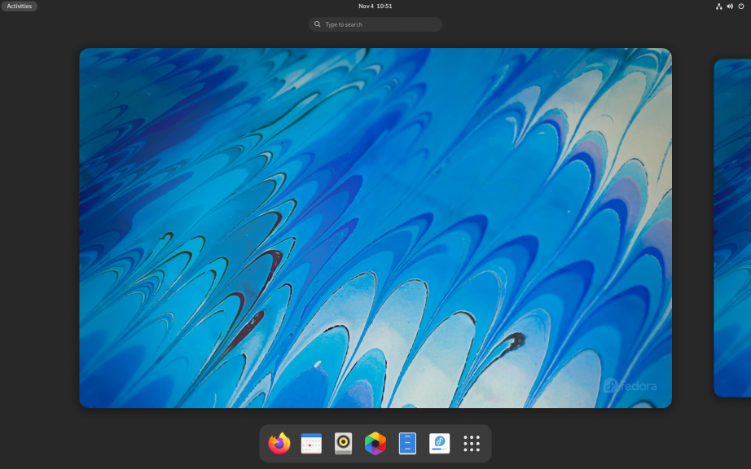 Интерфейс Linux Fedora8. MANJARO
Это один из самых популярных дистрибутивов, основанных на Arch Linux. Он делает эту систему более стабильной, предоставляя отдельные репозитории пакетов, в которых они уже более протестированы, стабильны и, скорее всего, не вызовут проблем при обновлении системы. В дистрибутиве, как и в Arch Linux используется система Rolling релизов. Это значит, что вы всегда будете иметь самую свежую версию дистрибутива на своём компьютере.
Также разработчики часто выпускают релизы Manjaro, у которых есть номер версии, например 20 или 21. Это не что иное, как снапшоты текущего состояния репозиториев системы. Официально дистрибутив поддерживает окружения рабочего стола Gnome, KDE и Xfce. Ещё несколько окружений поддерживается сообществом. В целом, это неплохой дистрибутив для домашнего компьютера.
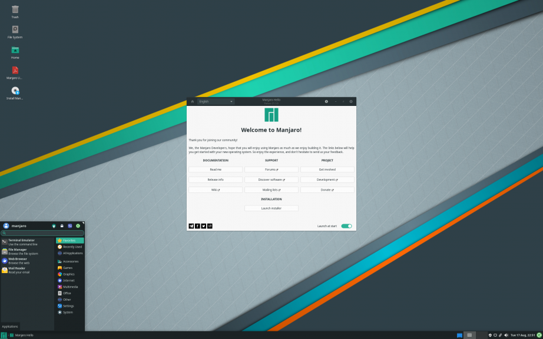 Интерфейс Linux Manjaro9. OPENSUSE
Это довольно популярный дистрибутив от копании SUSE. Он основан на наработках SUSE Linux Enterprice и использует систему управления пакетами RPM. У дистрибутива есть две редакции. Редакция с обычными релизами под названием Leap и редакция с Rolling релизами под названием Tumbleweed. Поэтому тут вы сможете уже выбрать что вам больше по душе - более стабильная система или самое новое программное обеспечение. Новые версии редакции Leap выходят примерно раз в год.
Раньше в дистрибутиве по умолчанию использовалось окружение рабочего стола KDE, сейчас во время установки можно выбрать ещё Gnome и XFCE. Для конфигурации системы используется утилита YaST. Если программного обеспечения, которое есть в официальных репозиториях вам будет мало, то существует Build Service, с помощью которого можно собрать много программ. Это тоже неплохой дистрибутив для домашнего использования.
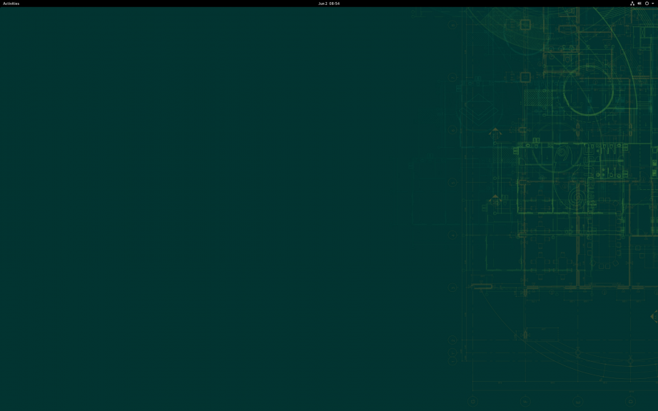 Интерфейс Linux Opensuse10. ARCH LINUX
Arch Linux - очень гибкий и настраиваемый дистрибутив, разрабатываемый сообществом. Он использует систему rolling релизов для того чтобы у пользователей было всегда самое свежее программное обеспечение, а также собственный формат пакетов и пакетный менеджер pacman. Особенность этой системы в том, что вы можете полностью её настроить. Вся установка выполняется с помощью командной строки.
Вы можете выбрать драйвера, дисплейный сервер, графическое окружение, набор программ. Всё это вам придётся устанавливать вручную. Эта система больше всего подходит тем, кто хочет разобраться как работает Linux изнутри и у кого есть время на это.
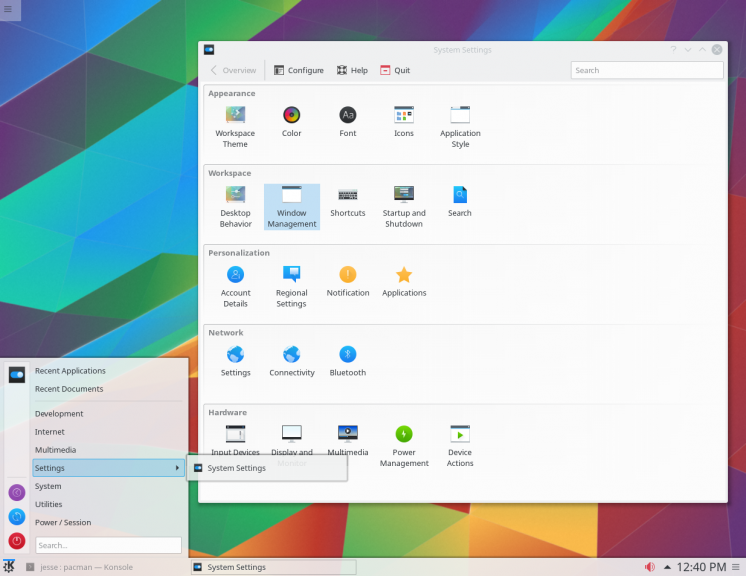 Интерфейс Linux ArchВЫВОДЫ
В этой статье мы рассмотрели лучшие дистрибутивы 2021 года, основываясь на популярности их в Яндекс. Согласно Distrowatch, на первом месте по популярности находится MX Linux, на втором EndeavourOS, и где то рядом, на пятом месте Pop OS. Дистрибутив Ubuntu они разместили на шестом месте. Возможно за границей ситуация с использованием дистрибутивов Linux меняется довольно быстро, но у нас всё осталось почти по старому. А каким дистрибутивом пользуетесь вы? Какой считаете лучшим? Напишите в комментариях!
Общее представление об Bash 27.12
ИсточникБезусловно, все те кто общается с ОС Linux хоть раз да имели дело(во всяком случае слышали точно) с командной оболочкой BASH. Но BASH не только командная оболочка, это еще и превосходный скриптовый язык программирования. Цель этой статьи — познакомить поближе юзеров с bash, рассказать про синтаксис, основные приемы и фишки языка, для того чтобы даже обычный пользователь смог быстренько написать простой скрипт для выполнения ежедневной(-недельной, -месячной) рутинной работы. BASH — Bourne-Again SHell (что может переводится как «перерожденный шел», или «Снова шел Борна(создатель sh)»), самый популярный командный интерпретатор в юниксоподобных системах, в особенности в GNU/Linux. Ниже приведу ряд встроенных команд, которые мы будем использовать для создания своих скриптов
Основные команды
Основная задача оболочки - выполнять команды, но кроме утилит, расположенных в файловой системе, Bash имеет свой набор команд, многими из которых вы пользуетесь каждый день сами этого не понимая. Эти команды Bash находятся не на диске, а встроены в саму оболочку. В этой статье мы рассмотрим основные команды bash в linux, которые могут быть полезны в некоторых ситуациях.
1. SOURCE
Эта команда позволяет прочитать и выполнить все команды из указанного файла в текущей командной оболочке. Это значит, что все заданные в нем переменные окружения будут видны во всех скриптах или командах, которые вы будете выполнять. Напомню, что если вы запускаете обычный скрипт и объявляете в нем переменную, то она будет доступна только ему потому что для скриптов создается отдельный экземпляр оболочки. Он наследует переменные родителя, но не наоборот. Эта команда часто применяется для обновления окружения после chroot:
$ source /etc/profile2. ALIAS
Команда alias позволяет создавать псевдонимы для других команд. Например, вы можете настроить так, чтобы когда вы вводите update, выполнялась команда sudo apt update && sudo apt upgrade. Если вызвать команду без параметров, то она выведет список уже заданных псевдонимов. Смотрите подробнее о том как создавать алиасы Linux в отдельной статье.
$ alias 3. BIND
С помощью этой команды вы можете связать нажатие клавиши с определенной командной или функцией. Например, настроим, чтобы при нажатии F12 в окне терминала выполнялась команда pwd:
$ bind
'"\e[24~":"pwd
"' 4. CD
Команда cd используется очень часто при работе с папками в терминале. Она позволяет сменить текущую папку на произвольную. Можно использовать чтобы не набирать длинные пути, также она необходима при компиляции. По умолчанию, текущая папка - домашняя:
$ cd / 5. DECLARE
Встроенная команда bash - declare позволяет объявлять переменные. Опция -a позволяет вывести все уже существующие переменные окружения. В отличии от обычного объявления вы можете задать различные параметры, например, сделать переменную только для чтения с помощью опции -r. Также можно объявлять функции.
$ declare
VAR=test 6. DIRS
Команда dirs отображает историю смены текущей папки. Каждая предыдущая папка отображается с новой строки. С помощью опции -n можно указать, сколько последних элементов выводить.
$ dirs 7. ECHO
Это одна из самых простых, но в то же время очень полезных команд. Она выводит указанную строку на экран. Часто используется в различных скриптах или для отправки значений в конфигурационные файлы. Подробнее про команду echo смотрите в отдельной статье.
$ echo "Это
строка" 8. ENABLE
Команда enable позволяет включать или отключать встроенные команды bash. Для включения встроенной команды достаточно передать ее в параметрах. Если вы хотите отключить команду, используйте опцию -n, после этого вместо встроенной команды, будет выполняться утилита из файловой системы.
$ enable -n
echo 9. EXIT
Универсальная команда, которая позволяет закрыть сеанс оболочки, выйти из терминала или завершить текущую сессию.
10. EXPORT
Еще одна команда для объявления переменных. Все объявленные с помощью нее переменные экспортируются во внешнее окружение среды и будут доступны всем скриптам и программам. С помощью опции -p вы можете посмотреть экспортированные на данный момент переменные.
$ export VAR=test 11. BG
Команда bg позволяет посмотреть команды, которые выполняются в фоне. Если вы нажмете сочетание клавиш Ctrl+Z, то утилита будет свернута в фоновый режим. Этой командой вы можете посмотреть все такие процессы для данной оболочки.
$ bg 12. FG
Эта команда позволяет восстановить команду из фона, в параметрах ей нужно передать только идентификатор нужного процесса, который вы можете узнать с помощью bg.
$ fg 1 13. HISTORY
Команда history linux позволяет посмотреть историю команд, которые вы выполняли ранее. Здесь сохраняется более 1000 последних команд, вы можете все их увидеть, выполнять по них поиск и так далее. Вы можете задать нужное количество записей просто передав нужное значение.
$ history 10 14. KILL
Команда kill может быть системной утилитой или командой оболочки. Она позволяет отправить указанному процессу сигнал. Например, SIGKILL, SIGTERM и другие. С помощью нее вы можете завершить процесс по его PID или идентификатору Bash.
15. LET
Команда let выполняет функцию калькулятора, ей нужно передать математическое выражение, которое она подсчитает. Можно передать несколько таких выражений.
$ let
"2+2" 16. POPD
Это еще одна команда, которая используется для навигации по каталогах. Команда удаляет последнюю директорию из стека каталогов. Таким образом, вы перемещаетесь в ранее выбранную текущую папку с помощью cd, на уровень выше. Команде можно передать в параметрах сколько папок нужно удалить. Для этого добавьте плюс, а затем цифру.
17. PRINTF
Эта команда похожа на echo по своему назначению похожа на echo. Она позволяет вывести в терминал строку, но перед выводом вы можете настроить ее форматирование. Синтаксис форматирования очень похож на тот, что используется в популярных языках программирования, таких как Си или PHP. Например, с помощью этой команды bash вы можете подставить значения переменных в произвольные места строки:
$ printf
"Var: %s
" "$VAR" 18. PUSHD
Команда pushd выполняет действие, обратное до popd и по назначению аналогична cd. Она устанавливает указанную папку на верхушку стека директорий, тем самым меняет текущую рабочую директорию на указанную вами.
19. PWD
Позволяет отобразить текущую рабочую папку:
$ pwd
20. READ
С помощью команды read, вы можете прочитать строку из стандартного ввода или файла в переменную. Есть подобные ей команды оболочки bash, которые позволяют считывать строку в массив. Команде можно передать файл для считывания, а также несколько переменных:
$ read VAR 21. SUSPEND
Позволяет приостановить выполнение оболочки пока не будет отправлен сигнал SIGCONT. Можно также приостановить выполнение одного из процессов, выполняющихся в фоне.
22. UMASK
Во время создания файлов, им присваиваются определенные права доступа. Право на чтение, запись и выполнение для владельца, группы и остальных пользователей. С помощью этой команды вы можете изменить правила, по которым присваиваются эти права.
23. TIME
Встроенная команда time позволяет замерять время выполнения любого скрипта или программы. Измеряется отдельно время выполнения программы и время на ввод пользователя.
24. WAIT
Наш список команд bash завершает wait. Она позволяет ожидать пока указанный процесс завершит свое выполнение. Вы можете использовать PID или идентификатор Bash для выбора нужного процесса.
Словарь
| Определение | Значение |
|---|---|
Linux |
Linux, Ли́нукс; в части случаев GNU/Linux — семейство Unix-подобных операционных систем на базе ядра Linux, включающих тот или иной набор утилит и программ проекта GNU, и, возможно, другие компоненты. Как и ядро Linux, системы на его основе, как правило, создаются и распространяются в соответствии с моделью разработки свободного и открытого программного обеспечения. Linux-системы распространяются в основном бесплатно в виде различных дистрибутивов — в форме, готовой для установки и удобной для сопровождения и обновлений, — и имеющих свой набор системных и прикладных компонентов, как свободных, так и проприетарных (собственнических) |
Bash |
BASH — Bourne-Again SHell (что может переводится как «перерожденный шел», или «Снова шел Борна(создатель sh)»), самый популярный командный интерпретатор в юниксоподобных системах, в особенности в GNU/Linux. Ниже приведу ряд встроенных команд, которые мы будем использовать для создания своих скриптов. Подавляющее большинство важных скриптов командного процессора Bourne может выполняться без изменения в bash, за исключением тех, которые ссылаются на специальные переменные Bourne или используют встроенные команды Bourne. Синтаксис команд Bash включает идеи, заимствованные у Korn shell (ksh) и C shell (csh), такие как редактирование командной строки, история команд, стек каталогов, переменные $RANDOM и $PPID, синтаксис замены команды $(…). Когда Bash используется как интерактивный командный процессор, он поддерживает автозавершение имён программ, файлов, переменных и т. п. с помощью клавиши Tab ↹ |